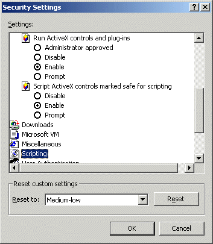
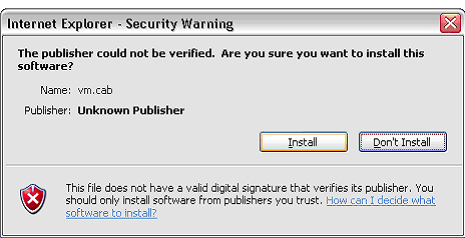

To allow ActiveX controls:
- In Internet Explorer, select Internet Options from the Tools menu.
- Click the Security tab.
- Click the Local Intranet zone (or the zone you have assigned the URL and Website to).
- Click Custom Level.
- In the Security Settings :
- If you are using Windows XP:
- Scroll down to Download unsigned ActiveX controls and click Prompt.
- Scroll to Initiale and script ActiveX controls not marked as safe and click Prompt.
- Scroll down to Run ActiveX controls and plug-ins and click Enable
- If you are using other versions of Windows:
- Scroll down to Run ActiveX controls and plug-ins and click Enable

- Click OK.
- At the warning prompt, click Yes to confirm that you want to change the security settings for this zone.
- Click OK to close the Internet Options .
If you are using Windows XP, when you first try to run the online documentation, Windows will display a warning.

To install the ActiveX and display the Online Documentation, click Install.